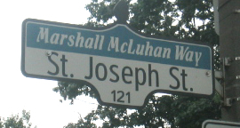

Hometown
H. Marshall McLuhan was born and raised in Edmonton, Alberta, Canada. He attended the University of Manitoba and later received his PhD in English literature from the University of Cambridge. Even a portion of Toronto's St. Joseph Street is co-named Marshall McLuhan Way.
